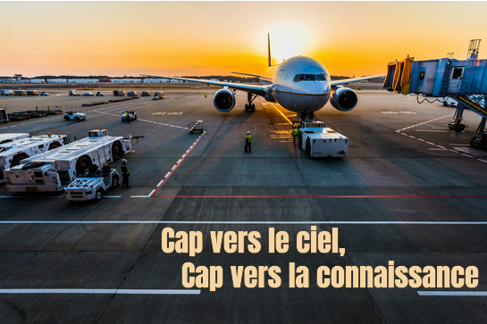

L'Histoire de l'aviation :
Si aujourd’hui, nous sommes en capacité de relier les 4 coins du monde en quelques heures, avec des avions toujours plus avancés en terme de technologie et de confort, développer ce mode de transport aura été un travail de longue haleine.
Plusieurs chercheurs, inventeurs se sont relayés au fil des siècles pour réaliser l’un des plus grands rêves de l’Homme : voler !
Nous vous proposons de monter à bord d’un avion à remonter le temps pour découvrir les différentes dates clefs qui ont marqué l’histoire de l’aviation.
XVème siècle : le début des recherches, des questionnements.
Artiste-inventeur, Léonard De Vinci fait parti des premiers à imaginer et à esquisser des croquis de machines qui pourraient permettre à l’Homme de voler. Il a ainsi été le premier à dessiner des parachutes et hélicoptères.
XVIIIème siècle : l’envol.
En 1780, les frères Montgolfier s’inspirent des feux de cheminée pour créer le premier engin volant capable de transporter les Hommes : la Montgolfière. Bien qu’ingénieux et révolutionnaire, ce système ne satisfait pas tous les chercheurs-inventeurs. Ainsi, ces derniers continuent d’étudier la création d’un système plus fiable qui ne dépende pas autant du vent et qui puisse être stabilisé et contrôlable dans les airs.
Début XIXème siècle : l’art de planner.
Pendant le XIXème siècle, les inventeurs développent les planneurs. Directement inspirés du squelette des oiseaux, et notamment de leurs ailes, ces planneurs ont permis de réaliser quelques avancées technologiques permettant aux inventeurs d’améliorer leurs machines au fil des années.
1890 : le français Clément Ader réalise le premier bond et s’élève à 20 cm au dessus du sol grâce à un aéroplane à vapeur.
1894 : l’anglais Hiram Stevens Maxim réalise le premier vol de quelques minutes à bord de son biplan à vapeur.
XXème siècle : les premiers avions.
Toutefois, il faut attendre leXXème siècle pour noter des avancées spectaculaires et particulièrement importantes. Les planneurs se transforment pour devenir, peu à peu, des avions – sous la forme que nous leur connaissons actuellement. L’Homme arrive à se soulever plus haut, plus loin, plus longtemps et réussit à transporter des poids de plus en plus conséquent.
1903 : les frères Wright travaillent sur la possibilité de faire élever et de contrôler un engin dans les airs. Ils développent alors, au niveau des ailes, un système permettant d’équilibrer l’aéroplane en plein vol malgré le vent. Ils deviennent ainsi les premiers à mettre en place un engin capable de s’élever grâce au vent et de se mouvoir de façon contrôlée.
1909 : le françaisLouis Blériot réalise la première longue traversée : celle de La Manche.
1912 : Roland Garros réalise le plus haut vol et atteint 5000 mètres d’altitude.
1927 : l’aviateur Charles Lindbergh réalise le premier vol « long courrier » et relie New York depuis Paris en 33 heures.
1947 : Chuck Yeager franchit le mur du son pour la première fois.
1949 : L’avion Havilland DH106 Comet, premier avion de ligne, effectue son baptême de l’air. C’est alors que les vols civils se développent. Les Hommes prennent goût aux voyages et le commerce des vols d’avion est lancé.
1967 : Le Boeing 737 prend du service et permet le premier long courrier à grande capacité.
1969 : Lancement du premier Concorde.
2005 : Premier vol de l’AirbusA380, le plus gros avion de ligne connu à ce jour. Il peut transporter 853 passagers sur deux étages.
2010 : Inauguration du Solar Impulse : le premier avion dont les moteurs sont alimentés par l’énergie solaire.
2016 :la version amélioré du Solar Impulse, le Solar Impulse II achève son tour du monde, démontrant qu’un alternative au kérosène est possible pour alimenter les avions.
L'évolution en image :
Les avions de Ligne :
L'avions de ligne est devenu en l'espace d'un siècle, le point central du déplacement. En effet, chaque jour, près de 100 000 vols relis les 4 coins du monde, en transportant près de 10 000 000 de passagers et plusieurs milliers de tonnes de marchandises. Ce ballet aérien incessant, fait du ciel une immense zone d'échange.
Cette histoire débute réellement dans les années 50 avec le premier avion de ligne à réaction :le Comet. Mais se sera bien des années plus tard que l'aviation, deviendra tel qu'on la connait aujourd'hui, et cette modernité apparaitra avec l'arrivé du Boeing 707 et 737 10 ans plus tard.Le Boeing 737, avion le plus vendu au monde, compte plus de 11 000 exemplaires.
Aujourd’hui, les géants de l’aéronautique comme Airbus et Boeing produisent des appareils de plus en plus puissants, confortables et économes. Chaque seconde, presque décole un A320. Ces avions volent à 900 km/h à une altitude de 11 000 mètres d'altitude en moyenne, où l'air de fais moindre, permettant de réduire la consomation de carburant et voler plus vite. Les nouveaux appareils comme le Boeing 787 Dreamliner ou l'Airbus A350 consomme environ 25% de carburant en moins, grace à des matériaux plus légers et des moteurs à haut rendement.
En moins de 24 heures, on peut passer de Paris à Tokyo, de Montréal à Sydney ou de Dakar à New York — preuve que le ciel est devenu, plus que jamais, notre plus vaste route.
Les avions longs courriers :

Les avions long-courriers sont conçus pour parcourir de très longues distances sans escale, souvent entre 6000 et 15 000 kilomètres. Ils relient les continents et permettent de voyager d’un bout à l’autre du monde en une seule étape.
Il existe différents modèle étant capable de voler des dizaines d'heures comme l'350, l'A380, le boeing 787...
Les avions petits courriers :

Les avions petit-courrier (ou court-courrier) sont des appareils conçus pour des vols de courte durée, généralement inférieurs à 3 heures et couvrant des distances de moins de 1 500 kilomètres. Ils assurent principalement des liaisons régionales ou nationales, comme entre Paris et Nice ou Lyon et Madrid. On retrouve principalement dans le monde les avions long courriers comme l'A320, le Boeing 737 ou encore le Ambraer E-jets.
Les avions de Chasse :
Les avions de chasse sont des appareils militaires spécialement conçus pour assurer la supériorité aérienne. Rapides, maniables et puissamment armés, ils ont pour mission principale d’intercepter, attaquer et détruire les avions ennemis. Depuis leur apparition au début du XXᵉ siècle, ces avions ont connu une évolution technologique spectaculaire, passant des premiers biplans en toile aux appareils supersoniques furtifs d’aujourd’hui.
Il existe 3 principaux type d'avion de chasse :

Multiroles
Avion de chasse comme le F16 ou rafale, conçu pour être bon dans tout les domaines (dogfight, support aérien...)

Les "supports" aériens
Type d'avion de chasse, lourdement armé (plusieurs tonne de bombes, de missiles...), aidant les forces aux sols, comme l'A10 warthog ou le SU 25

Les Chasseurs ou "Dogfighter"
L'avion de chasse à proprement parler : avion maniable, rapide... Son rôle : détruire les avions énnemis ou faire de la dissuasion comme le F22 raptor, le SU 57.. .
Les autres rôle :
- Intercepteur : interceptent des avions ennemis à trèd grande vitesse comme le Mirage 2000.
- Supériorité aérienne :jouent un rôle crucial dans la reconnaissance aérienne et l'observation des positions ennemis comme l'AC 130.
- Bombardier : ils ont pour rôle de bombarder les bases de façon stratégique et présice comme le B2 spirit.